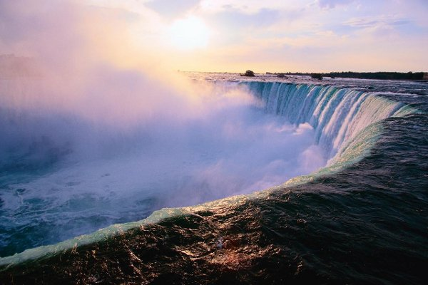
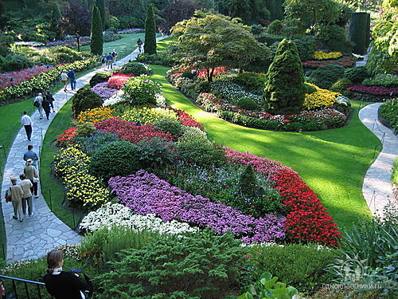
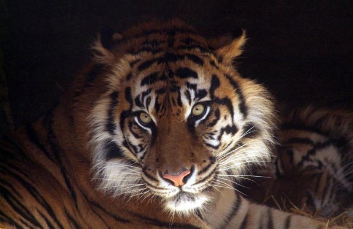
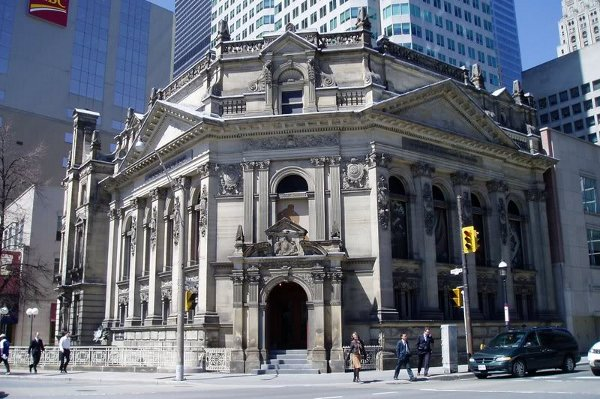
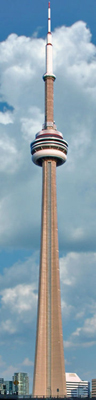

Ниагарский водопад
 На границе США и Канада находится одно из самых известных природных чудес наше планеты – Ниагарский водопад. Миллионы людей ежегодно приезжают сюда, чтобы увидеть величественное зрелище – массу воды, падающую с высоты 50 метров. Само слово Ниагара на языке индейцев племени ирокезов значит «грохочущая вода». По их легенде именно здесь обитал грозный бог воды. Задолго до того как это творение природы предстанет перед глазами, можно увидеть облако водяного пара и услышать ревущий шум разбивающейся о камни воды. Ниагарский водопад расположен на реке Ниагара, вытекающей из системы канадских Великих Озер. Возле самого уступа дорогу воде преграждают два острова – небольшой Козий и совсем маленький Лунный, и со скалы вода падает тремя потоками. Один из них - самый большой водопад «Подкова», ширина которого почти 800 метров, находится на территории Канады, два других водопада – «Американский» (21 м) и «Фата невесты» (323 м) находятся на территории США. Туристы могут любоваться этим водопад разными способами. Можно увидеть его с птичьего полета, поднявшись на туричстическом вертолете. На прогулочном пароходике Maid of Mist (Туманная дева), можно совершить прогулку, подплыв практически к самому водопаду. На специальном лифте можно спуститься в «Пещеру ветров» (Cave of Winds) – площадку у самого подножья водопада. Кроме билета туристам выдают комплект из дождевика шлепки и пакета для личных вещей, ведь остаться сухим вблизи Ниагарского водопада невозможно. Специальные мосты для туристов построены и на реке Ниагаре выше и ниже водопада, что позволяет увидеть этот природный феномен с разных точек. По Радужному мосту (Rainbow bridge), расположенному в США ниже по течению реки, можно подъехать к водопаду и на автомобиле. Ниагарский водопад производит грандиозное впечатление в любое время суток и в любое время года. Он красив не только днем, подсвеченный огнями, он прекрасен и в вечерние часы. Летом Ниагарский водопад окружают зелень и цветы, расположенных вокруг парков и садов, а многочисленные радуги преломляются в его водяных брызгах. Не менее восхитительное зрелище водопад производит и зимой, когда бурные потоки воды спешат к пропасти сквозь сверкающие глыбы льда. В это время года на канадской территории водопада проходит фестиваль огней, и на темном небе расцветают фейерверки, сполохи которых отражаются в струях воды и ледяном обрамлении уступа водопада. В окрестностсях Ниагары располагаются и гнездовья многих видов птиц, в конце осени сюда прилетают миллионы чаек. Рядом с водопадом находится кинотеатр IMAX, где показывают фильмы об истории водопада, его открытии и покорения. Здесь же выставлены средства при помощи, которых смельчаки пытались совершить путешествие в его водах – бочки, шлюпки, спасательные пояса и т.д.
Парк королевы Елизаветы

Знаменитый парк расположился на возвышенности, которая называлась Маленькой горой (Little Mountain). Она и сейчас так называется, только мало кто из жителей города вспомнит Маленькую гору, зато парк королевы Елизаветы покажет каждый. С вершины холма (167 метров над уровнем моря, кстати, самое высокое место в Ванкувере) открывается поразительная по красоте панорама города. Общая площадь участка 52 гектара. В октябре 1949 года мэр Ванкувера посадил первое дерево, знаменующее собой закладку парка. В 1951 году во время визита в город тогда еще наследная английская принцесса Елизавета посадила привезенный с собой английский дуб.
Изучать ботанику в нем приятно и возможно круглый год. Считается, что в парке собраны все до единой породы деревьев Канады. И хотя на склонах горы явно доминируют местные распространенные сорта деревьев, как клены, ели, кедры, пихты, можно увидеть и редкие, как ясень, береза, лиственница и множество других. Кусты вечнозеленых родедендронов во время цветения поражают разноцветием. Акации и магнолии. Встречаются и привозные красавцы: это, например, японские вишни и сливы, а также изумительной красоты араукария чилийская или, как дерево стало известно в англоязычной среде, "Загадка обезьяны" (Monkey Puzzle). Под одним из огромных валунов парка спрятана металлическая капсула, в которой находится послание к потомкам от живущего в 1954 году поколения. Капсулу согласно завещанию необходимо выкопать и вскрыть в 2054 году. Это дань моде, которая 1950-е годы прокатилась по многим странам мира...
Одним из последних подарков городу и парку стали старинные британские часы, пожалованные Лайонз клубом (клубом Львов) в 1995 году. Они расположились на площади перед Зимним садом. Подобные клубы с благотворительными целями распространены во всем мире. Лишь в Ванкувере их около 30, а центральный является старейшим в Канаде.
Зоопарк в Торонто
 Во многих канадских городах есть зоопарки, но, наверное, самым прославленным из них, известным натуралистам всего мира является Зоопарк в городе Торонто, который является третьим по величине зоопарком мира. Он был открыт на территории самого города в красивейшей Красной Долине в 1974 году. Занимаемая зоопарком площадь составляет почти триста гектар, по которым проходят пешеходные тропинки общей длина которых составляет более десяти километров. Осмотреть пешком весь зоопарк за один день практически невозможно, поэтому в нем предусмотрен специальный вид транспорта – зоомобиль – миниатюрный поезд с четырьмя вагончиками. В этом парке в комфортных условиях содержатся более пяти тысяч животных, а включая рыб и беспозвоночных число их достигает 16 тысяч. Некоторые из видов, обитающих здесь млекопитающих – белые львы, коалы, золотые обезьянки поистине уникальны и чрезвычайно редко содержатся в неволе. Все животные размещены в семи зонах, в которых воссозданы природные условия Индии-Малайзии, Африки, Евразии, Канады, Австралии, Евразии, Тундры. В этих зонах животные содержатся в огромных вольерах, где за ними можно наблюдать практически в природных условия. Кроме того, звери содержатся и в павильонах с тщательно поддерживаемыми режимами температуры и влажности. Хорошо себя чувствуют животные и в помещении, там они также живут в больших, прекрасно оборудованных вольерах. В Зоопарке есть и волчий лес, где можно увидеть поведение этих диких зверей в их родной стихии. Для детей в зоосаду открыт Детский зоопарк (Центр Целлера), где проводятся интересные экскурсии и организованы регулярные занятия, знакомящие детей с жизнью животных разных стран мира. Здесь же расположен и пруд, где в естественных условиях можно увидеть жизнь многих обитателей пресноводных вод. Поражает количество птиц, представленных в вольерах Зоопарка Торонто, многие из них – коренные обитатели Канады, но здесь можно увидеть и ярких фламинго, и крохотных колибри, и красочных попугаев. Специальные помещения отведены под террариум и инсектариум, где выставлены насекомые с разных континентов. Огромное впечатление производит и аквариум, там, в искусственных условиях, воссоздан уголок Большого Барьерного рифа и другие океанические ландшафты. В специальном бассейне плавают подсвеченные огнями разнообразные виды медуз. Кроме того, специальный участок отведен под выставку динозавров. На ней представлено 18 действующих моделей разных видов этих доисторических ящеров. Зоопарк в Торонто работает практически круглый год, закрываясь только на один день – в Рождество. В нем существует развитая инфраструктура, в его многочисленных кафе и ресторанах, можно отдохнуть и перекусить или плотно поесть. Больше миллиона человек ежегодно посещает этот зоопарк, и число их постоянно увеличивается. В настоящее время Зоопарк в Торонто входит в число наиболее посещаемых достопримечательностей Канады.
Зал Хоккейной Славы
 Подавляющее большинство жителей Канады ведут активный образ жизни. Здесь распространены горные лыжи и плавание, пешеходные прогулки и катание на коньках. Но если спросить любого канадца, какой вид спорта он считает национальным – каждый, не задумываясь, ответит – хоккей с шайбой. На территории этой страны еще в 17 веке зародилась эта игра, а в конце 19 столетия студенты монреальского колледжа МакГилл выработали ее правила. Недаром на протяжении долгого времени хоккей с шайбой был известен под названием канадского хоккея. В самой Канаде игры НХЛ пользуются огромной популярностью. Слава выдающихся мастеров этой игры сравнима с известностью деятелей шоу-бизнеса, а, возможно, даже превосходит ее. Чтобы увековечить память о звездах хоккея и победах, одержанных на ледовых аренах, в 1943 году было принято решение открыть Зал Хоккейной Славы. Первоначально он находился в городе Кингстоне, но уже 1958 году переехал в Торонто. Долгое время этот Зал находился на территории выставочного комплекса города, а с 1993 года был размещен в красивом здании старинного банка на прославленной улице Торонто - Янг-Стрит. В этом музее на площади свыше пяти тысяч квадратных метров размещено 15 различных экспозиций, где представлено множество фотографий, хоккейного снаряжения, а также памятных трофеев и наград. Здесь можно проследить за историей хоккея с шайбой в Канаде и в других странах. Среди экспонатов есть первые хоккейные костюмы, клюшки и шайбы, а также медали, полученные канадскими игроками на различных соревнованиях, в том числе и золотые медали Олимпиады 2010 года в Ванкувере. В Зале НХЛ находится и главная реликвия канадского хоккея – кубок Стэнли. Однако самый первый кубок – чаша, пожертвованная сэром Стэнли Принстоном в 1883 году, хранится в банковском хранилище. Но Зал Хоккейной Славы – это не только спортивные экспозиции. В залах музея можно и поиграть в хоккей, правда, виртуальный. На мониторах, установленных в холлах, транслируются лучшие матчи с участием знаменитых звезд – Бобби Холла, Уильяма Грецки, Марио Люмье и других. И, конечно, наибольшее внимание притягивает Большой Зал, где на специальной доске выбиты имена самых прославленных хоккеистов мира. Их портреты, биографии и личные вещи представлены в экспозиции. Быть внесенным в этот зал, высочайшая честь для любого игрока в хоккей. Удостоенному такой чести вручается именной перстень из золота с выгравированной эмблемой НХЛ. Комиссия, в состав которой входит 18 человек известных канадских игроков и тренеров, ежегодно принимает решение о занесении в Зал Славы хоккеистов, тренеров, а также знаментых спортивных комментаторов, судей, менеджеров команд и других лиц, связанных с этим видом спортом. В настоящее время в зал включено почти 250 хоккеистов, в том числе четыре русских игрока: Владислав Третьяк, Валерий Харламов, Вячеслав Фетисов, Игорь Ларионов и прославленный тренер Анатолий Тарасов. В последние годы в мужскую компанию вошли и две хоккеистки. В 2008 году сюда вписали имя американки Камми Гранато, а в 2009 году – звезды канадского женского хоккея 80-х годов Анджелы Джеймс. Зал Хоккейной Славы одна из самых известных и посещаемых достопримечательностей не только города Торонто, но и всей Канады. Ежегодно сюда приходит более 350 тысяч человек, чтобы увидеть крупнейшее в мире собрание экспонатов, связанных с любимой игрой миллионов жителей разных стран – хоккеем с шайбой.
CN Tower

Си-Эн Та́уэр (англ. CN Tower) — самое высокое сооружение в мире с 1976 по 2007 год. Его высота составляет 553,33 метра. Расположено в Торонто (Канада, провинция Онтарио) и является символом этого города. Ежегодно Си-Эн Тауэр посещают свыше 2 миллионов человек.
Первоначально аббревиатура СN расшифровывалась как Canadian National (так как здание принадлежало компании Canadian National Railway Company), однако, в 1995 году башня была куплена компанией Canada Lands Company (CLC). Жители Торонто пожелали сохранить прежнее название телебашни, поэтому теперь аббревиатура CN официально расшифровывается как Canada’s National.
Земляные работы для сооружения железобетонной конструкции с последующим натяжением арматуры весом 130 000 т начались 12 февраля 1973 г., а уже 2 апреля 1975 г. возведение башни было завершено.
Факты:
- Си-Эн Тауэр на 13 метров выше, чем Останкинская телебашня.
- Более 78 молний бьёт по башне ежегодно.
- За всё время строительства объекта погиб один рабочий.
- Си-Эн Тауэр способна выдержать ветер скоростью 420 км/ч.
- Лифты в башне движутся со скоростью 22 км/ч и достигают обзорной площадки и ресторана за 58 и 61 секунду соответственно.
- Си-Эн Тауэр почти в два раза выше Эйфелевой башни.
- Стеклянный пол смотровой площадки может выдерживать вес до 109 кг на см² (то есть примерно 14 взрослых гиппопотамов).
- Си-Эн Тауэр весит свыше 130 000 тонн. На строительство было потрачено 40 524 м³ бетона. Этого количества было бы достаточно для того, чтобы сделать пешеходную дорожку от Торонто до Кингстона (250 км).
- Башня способна выдерживать землетрясения силой до 8,5 баллов по шкале Рихтера.
- 26 июня 2006 года Си-Эн Тауэр отметила 30-й год установления рекорда в категории самого высокого здания.
- 21 июля 2007 года Си-Эн Тауэр потеряла титул самого высокого здания, отдав его Дубайской Башне.
- На высоте 351 м находится вращающийся[источник не указан 91 день] ресторан на 416 мест.
- В ясные дни отсюда видны холмы, удалённые от башни на 120 км.
- С 1 августа 2011 г. посетителям башни предлагается аттракцион "Edge Walk": прогулка (со страховкой) вокруг обзорной площадки на высоте 365 м. по открытому неогороженному карнизу шириной около 1.5 м.